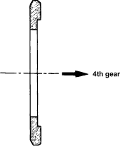

Special Tools Required
- Bearing installer 5-8840-0054-0 (J-33374)
NOTE: The insert spring set positions differ for right and left. The ends of the insert spring should not interfere with the hub.

- Install the 3rd gear needle bearing, input 3rd gear, 3rd block ring, 3rd/4th synchroniser assembly and 4th gear needle bearing collar on the input shaft.
NOTE:
- Be careful not to twist the inserts in the block ring opening portions when pressing.
- Note the installation direction when assembling the synchroniser assembly.
- Using the special tool with a press the 3rd/4th synchroniser assembly (A) and 4th gear needle bearing collar (B).

- Install the 4th block ring.
- Install the 4th gear needle bearing.
- Install the input 4th gear.
- Install the 4th gear thrust washer. Note the installation direction.

- Install the rear input shaft bearing (A). Using the special tool, press the bearing into place.

- Install the input shaft bearing (A). Using the special tool, press the bearing into place.